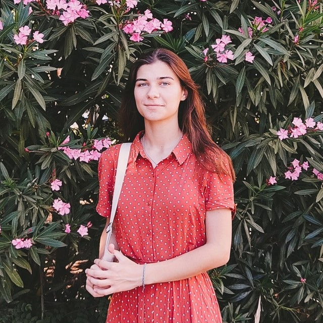

Contacts
- Location: Crimea, Simferopol
- E-mail: irina.v.tim@gmail.com
- GitHub: Timiry
Skills
- HTML, CSS
- C#, C++
- Python
- Git, GitHub
- Figma
Projects
- Training course project “CFU-maps” (GitHub)
Education
- In 2021 entered CFU, software engineering faculty.
- Courses on Stepik:
Irina Timchenko
Junior frontend developer
About me
I am second-year student of CFU. I don’t have any work experience yet, but I am actively studying both at the university and on my own. I am interested in frontend because I like to create something beautiful and immediately see the result of my work. I am responsible for my work, I try to do it on time and I know how to work in a team. My goal is to get enough knowledge and experience to get a job as a frontend developer.
Code examples
One of my solutions from Codewars:
using System;
using System.Text;
public class Kata
{
public static int SquareDigits(int n)
{
if(n == 0) return 0;
StringBuilder buf = new StringBuilder();
int a;
while (n > 0)
{
a = n % 10;
a = a*a;
n /= 10;
buf.Insert(0, a.ToString());
}
return Convert.ToInt32(buf.ToString());
}
}
English
My English level: A2